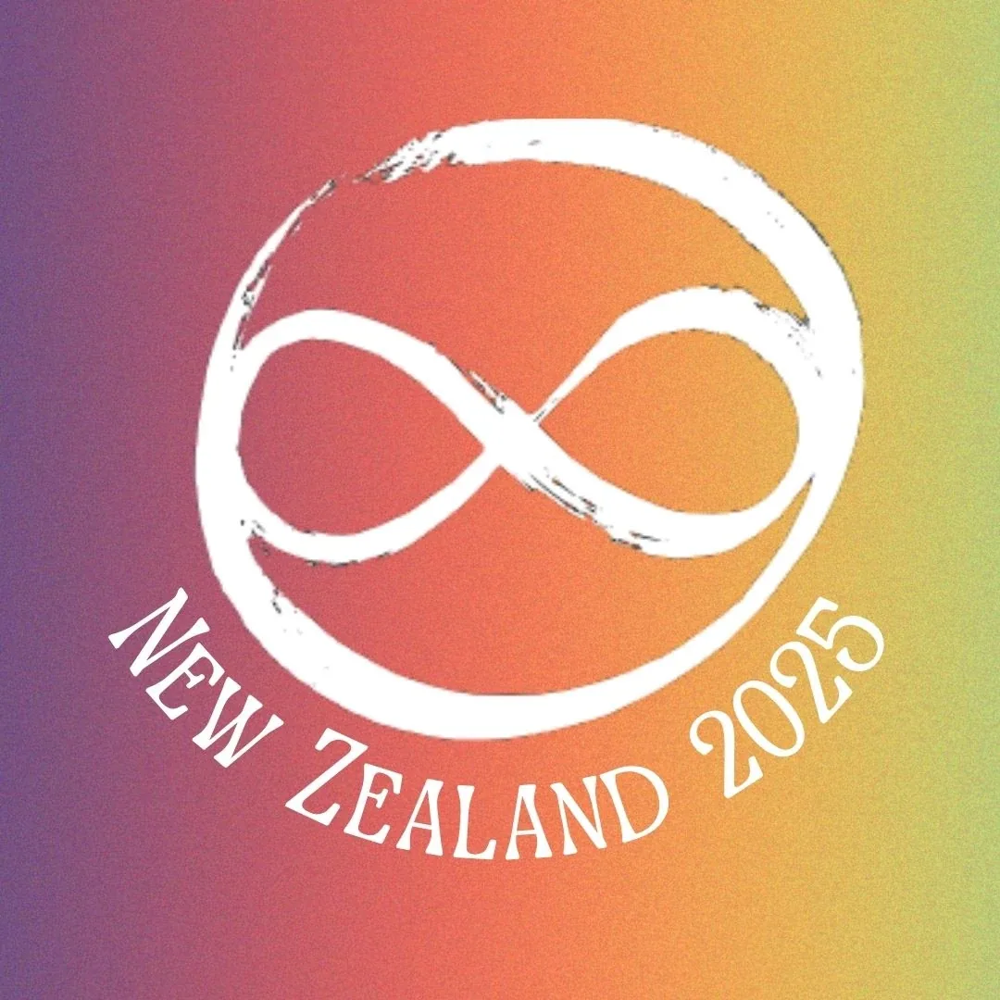
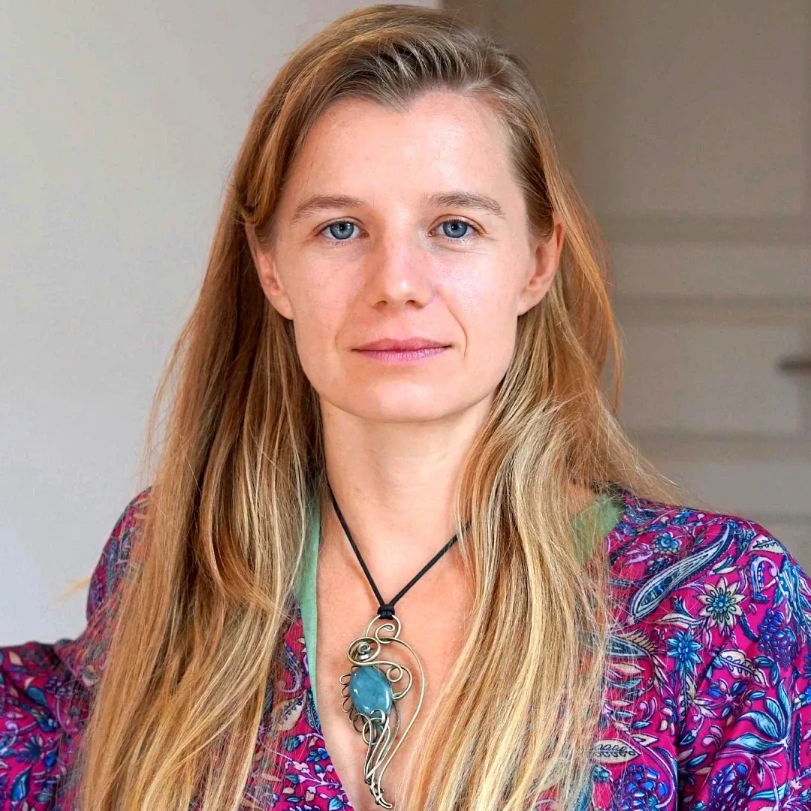
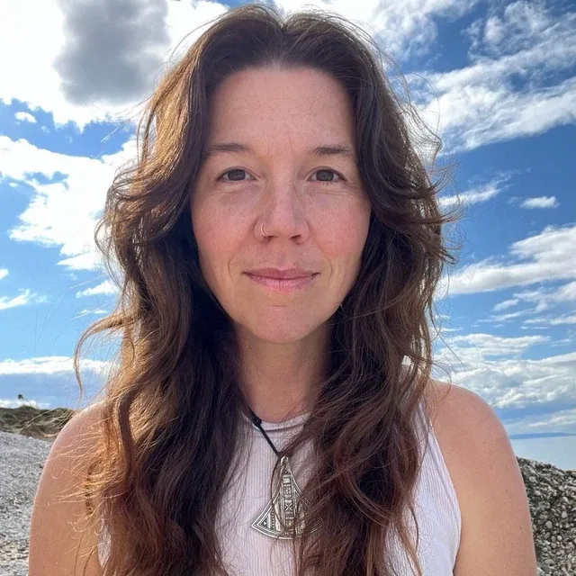
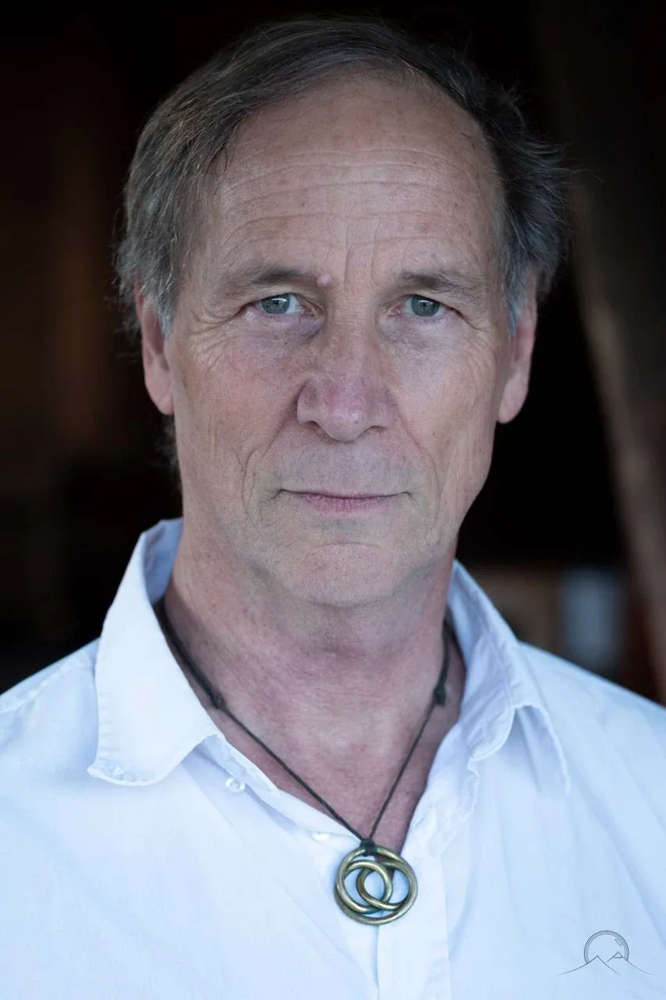
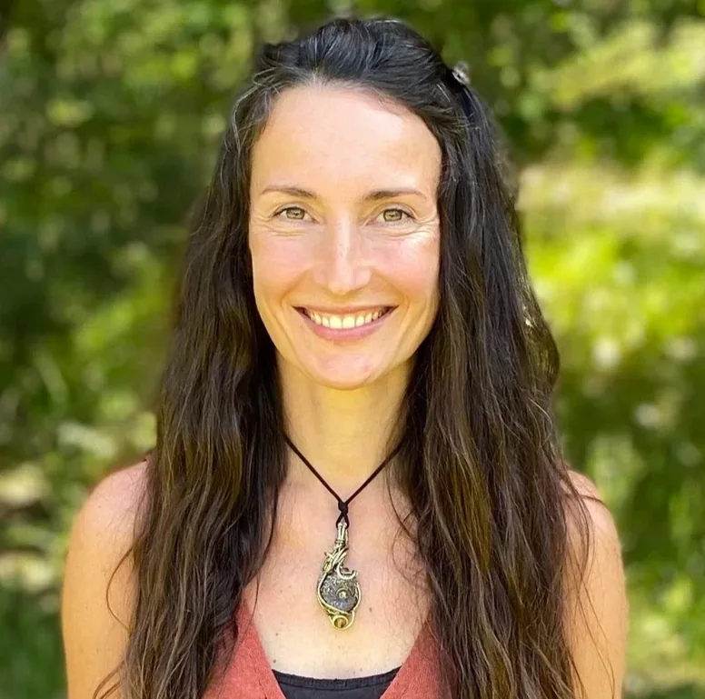
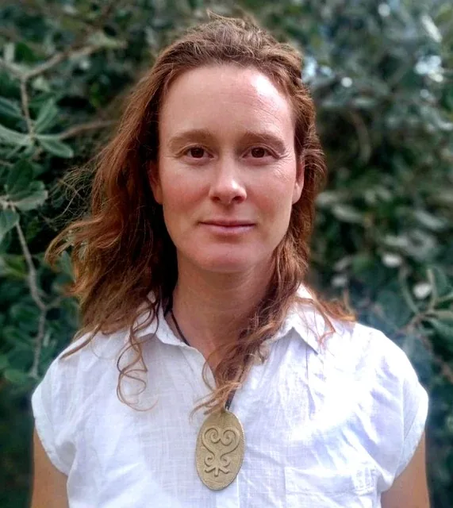
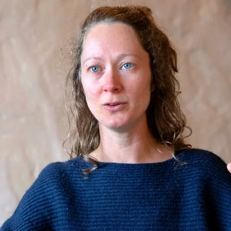

-
New Zealand 2025 is a three months transformational adventure.- From November 2025 to January 2026, international Possibility Management trainers: - Anne-Chloé Destremau,- Clinton Callahanand- Vera Franco,- travel to Aotearoa (Maori for 'New Zealand') to deliver formidable trainings in a co-living environment. - These will be a series of authentic adulthood initiation chambers. - Through transformation, emotional healing processes, and skill-building, - you train to be the source of a different future for yourself and for others. - New Zealand 2025 is an invitation for you, geniuses, - to gather and collaboratively create enough mass - for the next regenerative culture to emerge all over the globe. - We welcome you with enthusiasm.
- Trainings- November 2025 - January 2026- Expand The Box - Women of Earth Lab - Possibility Lab - Clinton Callahan, Anne-Chloé Destremau- & Vera Franco- Women of Earth Bridgehouse- 23 December 2025 - 13 January 2026- A lived-in environment for women to heal through radical relating with other women in everyday life. A place to bring your projects to life with empowerment and celebration. - Meredith Witt, Sanne Bongers, Vera Franco & Anne-Chloé Destremau
- Women of Earth Summit- 14-18 January 2026- A 5-day high quality context upgrade for your projects and your team. Side-by-side with other women who carry the vision of life-giving infrastructures and programs, we invent the culture we want to live in. - Anne-Chloé Destremau, Vera Franco, Sanne Bongers & Ewa Szczepaniak- Other Events- The community of Possibilitators in New Zealand ongoingly offers extraordinary spaces to meet other cultural creatives and liberate your inner resources. - Rage Club, Emotional Healing Processes Day, Possibility Team, ... - Find them all on the PM NZ Calendar:
- The Spaceholder & Trainer Team






-
The 'What? How? Who?' Questions- # What? Possibility Management and Archiarchy.- Possibility Management is a global context and community providing: - Healing,- Adulthood Initiations,- Thoughtware Upgrades,- Transformational Skills, and- Personal Agencyfor creating the culture you would love to live in.- After a one decade of development, we discovered that what we were inventing is - thoughtwarefor next culture:- Archiarchy. Archiarchy is the culture that is naturally emerging after Matriarchy and Patriarchy have run their course, as it is becoming clearly evident these days.- The first - Expand The Box- Clinton Callahan.- Since then, Possibility Management has expanded, transformed and deepened its own - contextin many ways through the radical and authentic research of Possibilitators ('those who create possibility for others') around the world.- Possibilitators are unfolding hidden talents for cavitating and navigating healing and transformational spaces, both online and in-person, for individuals and in groups in - Possibility Teams,- Rage Club,- Fear Club,- Possibility Coaching,- WorkTalks,- Workshops,- articles, and- books.- Possibility Management has taken root in New Zealand seven years ago with Ana Norambuena. Chilean-born, she moved from Germany to New Zealand without speaking English. Trained as a psychologist, she became the seed of Archiarchy in New Zealand as a - Expand The Boxand Possibility Lab Trainer.- # How? Adulthood Initiations and Skill-Building.- Possibility Management is a bridge to the regenerative culture of Archiarchy. - Our specialty is delivering - Authentic Adulthood Initiations. As you shed off the layers of childhood that you no longer need, you gain the authority and agency to make your love for the world be what you life is truly about. As you grow up, you can choose to be audacious enough to take responsibility for the entire human family.- Plus, we heal in Emotional Healing Processes. We build new culture through developing gameworld building skill, context setting and village weaving. We practice radical relating with women, men and our team to learn to live together better. We get on each other's team because your success is our success. - Expand The BoxTraining is a thoughtmap upgrade centered training.
- Possibility Lab is an Adulthood Initations and Skill-building training.
- Women of Earth Lab is a context shift, graduating from Patriarchy to liberate the feminine force that lies under the surface.
- Women of Earth Bridgehouse is a lived-in environment to dismantly deeply-ingrained patterns that block you from collaborating or creating what you truly want.
- Women of Earth Summit is a 5-day deeply healing and collaborative journey for project builders, community holders and cultural creatives.
-
Who? Geniuses!- Genius talents are suppressed in modern culture. For most of us, we have - notbeen called into action or trained to deliver our true value. On the contrary, we have been wounded by school and ridiculed for exploring different ways of being human.- Geniuses are the key for a future that is centered on something other than the modern sociopathic traditions of profit and greed. When you initiate your genius, you gain access to the infinite ressources of the - Archetypal forces.- We discovered that human genius thrives best when surrounded by other empowered and empowering edgeworkers. When you establish a culture where who you are is what you want to succeed, impossibility becomes surmontable. With a collaborative team, your vision comes to life. - Youare the geniuses that we have been waiting for!
-
Join this transformational adventure in building mass for the emergence of regenerative cultures on Planet Earth.
- NOTE:This website is a- Bubble in the Bubble Mapof the free-to-play massively-multiplayeronline-and-offline thoughtware-upgrade matrix-building personal-transformation real-life adventure-game called- StartOver.xyz. It is a- doorwayto- experimentsthat- upgrade your thoughtwareso you can relocate your- point of originand- createmore- possibility. Your- knowledgeis what youthink about. Your- thoughtwareis what you useto think with. When you- change your thoughtware,you go through a- liquid stateas your mind- reorganizesitself. Liquid states can bring up transformational- feelingsand- emotions. By- upgrading your thoughtwareyou- build matrixto hold more- consciousness (archived — not captured)and leave behind a- low dramalife of- reactivity- .No one can upgrade yourthoughtware for you. More interestingly, no one can stop you from upgrading your thoughtware. Our theory is that when we c- ollectively build1,000,000 new Matrix Points wewill change the morphogenetic field of the human race for the better. Please choose r- esponsiblyto read this website. Reading thiswhole website is worth 1 Matrix Point. Doing any of the experiments earns you additional Matrix Points. Please use Matrix Code- PMNZ2025.00to log yourMatrix Point for reading this website on- StartOver.xyz.Thank you for playing full out!